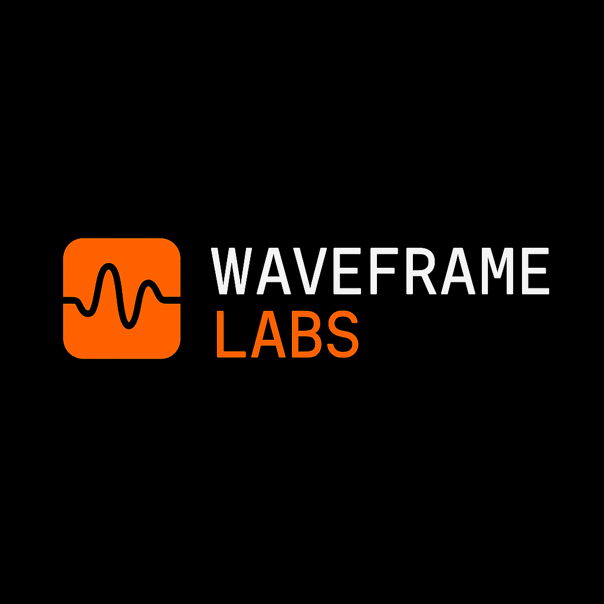

Aurora Workflow Orchestration (AWO)
The methodology: role-structured, audit-first research with human validation and falsifiability manifests.
AWO RepositoryIndependent AI-oriented research organization developing reproducible, falsifiable scientific workflows.
Waveframe Labs is focused on reproducible, audit-first science. We publish the Aurora Workflow Orchestration (AWO) method, ship the CRI-CORE tooling that ensures deterministic execution and verifiable provenance for each workflow run, and apply the stack to frontier work—e.g., Waveframe v4.0 (cosmology) and the Societal Progress Simulator.
The methodology: role-structured, audit-first research with human validation and falsifiability manifests.
AWO RepositoryThe tooling layer: ensures deterministic execution and verifiable provenance for each workflow run.
CRI-CORE (coming online)Commercial extensions for regulated environments (policy packs, hardened pipelines, governance dashboards).
RoadmapEntropy–action, observer-aware cosmology. Formal derivations and falsifiable predictions.
RepositoryInteractive model for societal and policy dynamics (with cultural signals). Built with Streamlit.
Repository Live DemoConsolidated references: contribution notes, public logs, and org docs.
Org ProfileHand-edited snapshot. For full history, see meta/SITE_LOG.md.
I’m Shawn C. Wright, an independent researcher building reproducible AI-human workflows and applying them to hard problems—from cosmology to societal modeling. I care about falsifiability, audit trails, and publishing artifacts the community can verify. If you want to collaborate or review our methods, email me at swright@waveframelabs.org or find me on ORCID 0009-0006-6043-9295.
Custom domain: waveframelabs.org. No-build static site. Keep .nojekyll in repo root. Edit index.html and push to main to deploy.